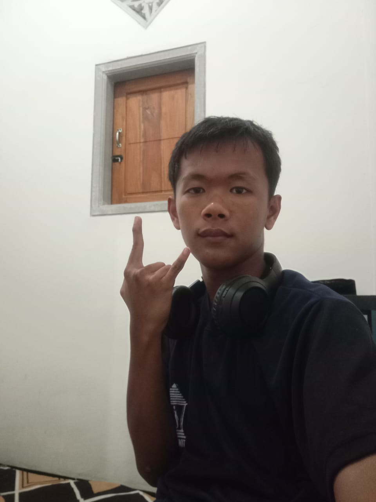

Saya anak pertama dalam keluarga, saya mempunyai adik kembar yang usianya berbeda empat tahun dariku. Ayah saya bekerja sebagai petani, sedangkan ibu saya berprofesi sebagai penjahit sekaligus guru mengaji di Madrasah Nailul Huda. Dari mereka, saya belajar arti kerja keras, tanggung jawab, dan kepedulian.
Masa kecil saya diawali di Kec. Sanan Kulon, Desa Sumberingin, bersekolah di TK Muhammadiyah sebelum pindah ke Desa Kedawung agar lebih dekat dengan ayah. Di sana saya melanjutkan pendidikan di SDN Kedawung 1 hingga SMPN 1 Nglegok.
Setelah lulus SMP, saya memilih melanjutkan ke SMKN 1 Nglegok jurusan Teknik Komputer dan Jaringan. Alasannya karena sekolah ini dekat dengan rumah, maju, serta jurusan TKJ memiliki tantangan tinggi yang mendorong saya untuk terus mengembangkan kemampuan.